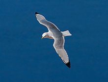
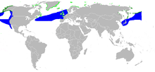
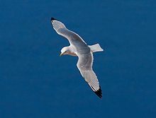
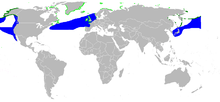

| Black-legged Kittiwake | |
|---|---|
|  | |
| In flight, Heligoland, Germany | |
| Conservation status | |
| Binomial name | |
| Rissa tridactyla (Linnaeus, 1758) |
|
|  | |
| Summer Winter |
| Black-legged Kittiwake | |
|---|---|
|  | |
| In flight, Heligoland, Germany | |
| Conservation status | |
| Binomial name | |
| Rissa tridactyla (Linnaeus, 1758) |
|
|  | |
| Summer Winter |
The Black-legged Kittiwake (Rissa tridactyla) is a seabird species in the gull family Laridae.
This species was first described by Linnaeus in his Systema naturae in 1758 as Larus tridactylus.[1]
In North America, this species is known as the Black-legged Kittiwake to differentiate it from the Red-legged Kittiwake, but in Europe, where it is the only member of the genus, it is often known just as Kittiwake.
The adults is roughly 40 centimetres (16 in) in length with a wingspan of 90–100 centimetres (35–39 in). It has a white head and body, grey back, grey wings tipped solid black, and have black legs and a yellow bill. Occasional individuals have pinky-grey to reddish legs, inviting confusion with Red-legged Kittiwake. In winter, this species acquires a dark grey smudge behind the eye and a grey hind-neck collar. The name is derived from its call, a shrill 'kittee-wa-aaake, kitte-wa-aaake'.
It is a coastal breeding bird around the north Pacific and north Atlantic oceans, found most commonly in North America and Europe. It breeds in large colonies on cliffs and is very noisy on the breeding ground. Cliff nesting for gulls occurs only in the Rissa species, and the Kittiwake is capable of utilizing the very sheerest of vertical cliffs, as is evident in their nesting sites on Staple Island in the outer Farne Islands (Hogan, 2005). One to two buff spotted eggs are laid in the nest lined with moss or seaweed. The downy young of Kittiwakes are white, since they have no need of camouflage from predators, and do not wander from the nest like Larus gulls for obvious safety reasons.
At fledging, the juveniles differ from the adults in having a black 'W' band across the length of the wings and whiter secondary and primary feathers behind the black 'W', a black hind-neck collar and a black terminal band on the tail. The old fisherman's name of "tarrock" for juvenile Kittiwakes is still occasionally used.
They are fish feeders, and are more pelagic than Larus gulls outside the breeding season. They do not scavenge at tips like some other gull species.
There are two races of Black-legged Kittiwake:

{kind=link}
{kind=link}